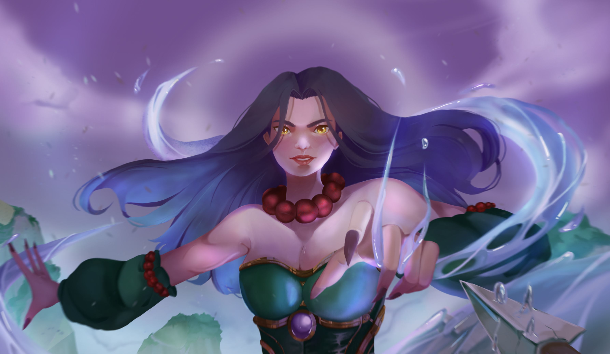
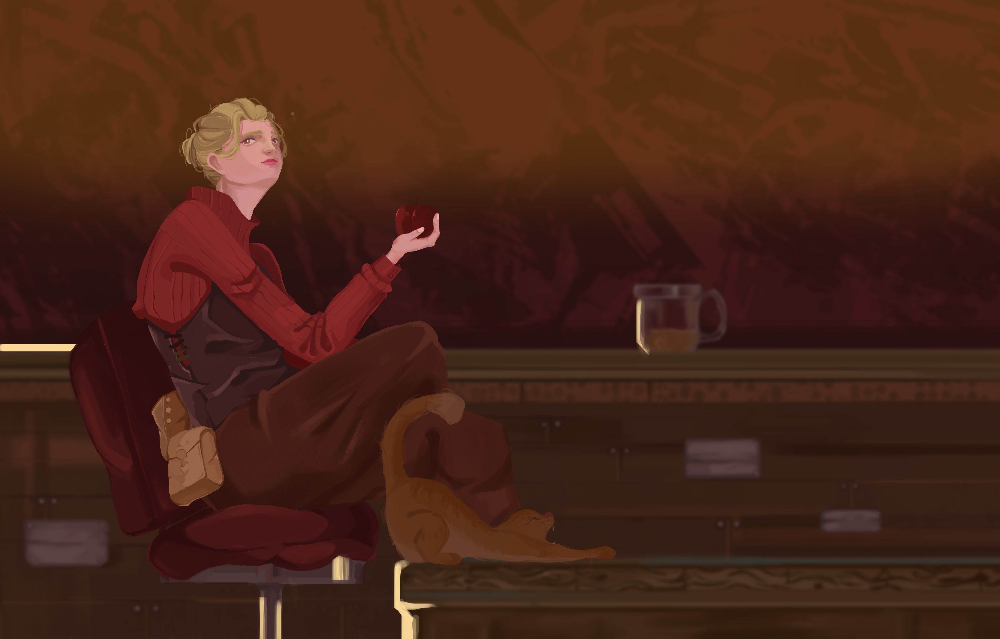
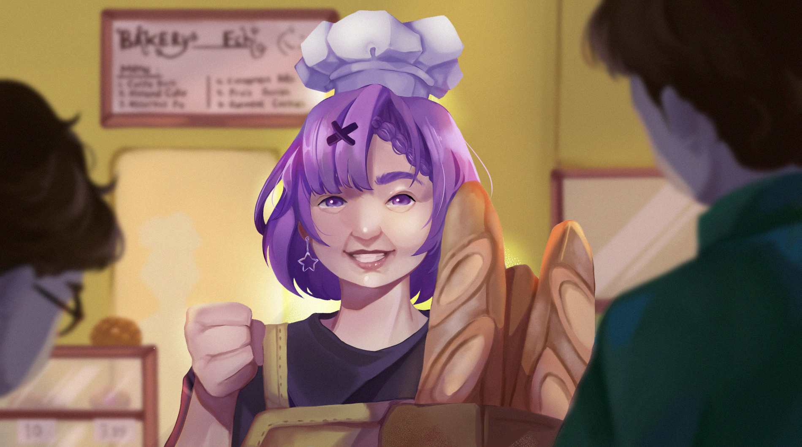

Digital Illustrator & Character Artist
Halo! Saya adalah seorang visual creator yang berfokus pada dunia digital illustration dan komparasi visual modern. Saat ini saya sedang aktif mengembangkan gaya ilustrasi yang minimalis namun tetap memiliki kedalaman cerita di setiap karyanya.
Selain fokus pada teknik menggambar digital, saya juga sedang mempelajari bagaimana mengintegrasikan karya seni ke dalam platform web. Saya percaya bahwa kombinasi seni visual dan teknologi mampu menciptakan pengalaman pengguna yang jauh lebih interaktif.
| Tahun | Edukasi / Sertifikasi |
|---|---|
| 2022 | SMK 3 Perguruan Cikini |
| 2023 | Sertifikasi Fundamental Digital Painting |
| Klien/Project | Jenis Ilustrasi |
|---|---|
| Membuat Fugi | Membuat Fugi atau Karakter 2d untuk keperluan Streaming teman |
| Klien Mandiri | Membuat Illustrasi untuk wallpaper Dekstop |

Eksplorasi pencahayaan dinamis, efek air, dan komposisi karakter yang kuat.

Studi atmosfer ruangan yang sinematik dengan kedalaman ruang dan detail yang intim.

Eksplorasi storytelling, interaksi karakter, dan ekspresi dalam suasana hangat.
Saya adalah seorang ilustrator digital yang berfokus pada pembuatan ilustrasi karakter dengan atmosfer yang kuat, minimalis, dan sinematik. Saya senang mengeksplorasi pencahayaan, tone warna, dan storytelling visual melalui detail di setiap karya.
Aktif memproduksi karya ilustrasi personal secara konsisten, membangun portofolio, serta mendalami teknik pencahayaan dan komposisi tingkat lanjut.
Menerima pesanan ilustrasi karakter semi-realis dan fanart ataupun fugi untuk kebutuhan livestream untuk klien lokal maupun mancanegara.